Formatting Rbec output from 2024-10-20 sequenced by BTK Turku using custom HAMBI Illumina v3 primers
1 Setup
1.1 Libraries
1.2 Global variables
Show/hide code
data_raw <- here::here("_data_raw", "communities", "20241024_BTK_illumina_v3")
data <- here::here("data", "communities", "20241024_BTK_illumina_v3")
amplicontar <- here::here(data_raw, "rbec_output.tar.gz")
# make processed data directory if it doesn't exist
fs::dir_create(data)
# create temporary location to decompress
tmpdir <- fs::file_temp()2 Read metadata
3 Read Rbec raw counts tables
3.1 Untar Rbec output tarball
3.2 Setup directory structure
3.3 Read
3.4 Clean up
4 Format
Show/hide code
straintabs_norm <- straintabs %>%
# Calls function that normalize counts by 16S copy number
normalize_by_copy() %>%
# Calls function that completes all combinations of 23 species
# this is important because some species go extinct that should be in the samples
# and we need to have those in the final table
complete_combos() %>%
# removes any extra whitespace on sample names
mutate(sample = str_trim(sample))Make final table
Show/hide code
# Later we will take advantage of the fact that for species not supposed to be
# in a sample the prior left_join will have filled the evo_hist category with an
# NA. We can then filter using this NA value
finaltable <- left_join(straintabs_norm, mddf, by = join_by(sample)) %>%
left_join(spdf, by = join_by(sample, strainID)) %>%
group_by(sample) %>%
dplyr::select(-genus, -species) %>%
mutate(f_raw = count_correct/sum(count_correct),
sample_tot_raw = sum(count_correct)) %>%
ungroup() %>%
relocate(sample_tot_raw, f_raw, target_f, evo_hist, .after = count_correct) %>%
# reformats sample names for pairs so that they are same as in the the batch from
# 20240711
mutate(sample = case_when(n_species == 2 ~ notes,
TRUE ~ sample))5 Analysis
Let’s quickly compare and look the at number of reads from the different kinds of experiment categories. Negative controls are samples from the experiment that contained growth medium but no cells. We included them to make sure that there was not contamination between wells during the experiment. Positive controls contain a mixsture of all 23 species (not sure why this was done), and some wells are just empty but were processed/sequenced anyway for convenience of the person preparing the libraries. Experiment samples are those that came from the actual experiment, and masterplate samples are the defined mixtures we made to inoculate the experiment. We sequenced these masterplates so that we would have T0 information for each experimental treatment.
Show/hide code
finaltable %>%
dplyr::select(sample, sample_tot_raw, community_type) %>%
distinct() %>%
ggplot(aes(x = sample_tot_raw)) +
geom_histogram(bins = 20, aes(fill = community_type)) +
scale_x_log10() +
annotation_logticks(sides = "b", color="grey30") +
labs(y = "Sample count", x = "Total reads per sample") +
facet_wrap(~ community_type, scales="free_y", nrow = 2)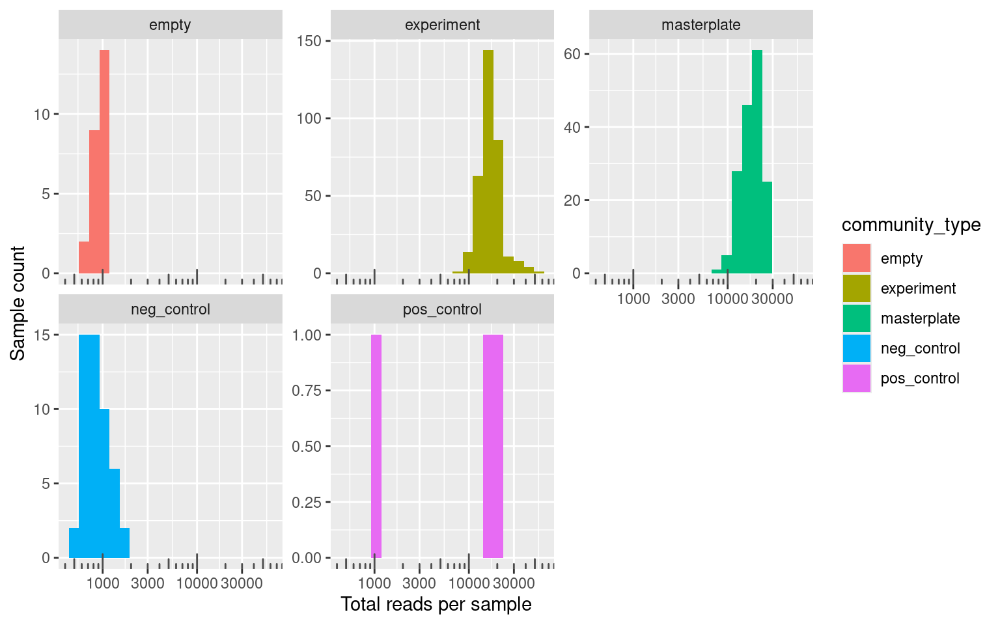
The smallest number of reads in the experimental samples is 8295 and the mean is 17337.13 which is considerably more than the smallest number of reads 452 and the mean 888.68 in the negative controls.
This looks really good. The number of reads in the negative controls are always very low (similar to “empty” samples and always an order of magnitude less than masterplates and experimental samples). The number of reads in the negative controls will depend on the sequencing depth used and in this batch compared to the first one with pairs we have used a higher sequencing depth (or less multiplexing) so that the average number of reads is higher here.
5.1 Negative controls
First, we’ll check whether the experimental and plate negative controls look good
Lets check what species are contaminating negative controls. Most appear to be low abundance contaminants of species excluded from the experiment. Probably this is cross talk from the positive controls and other samples
Show/hide code
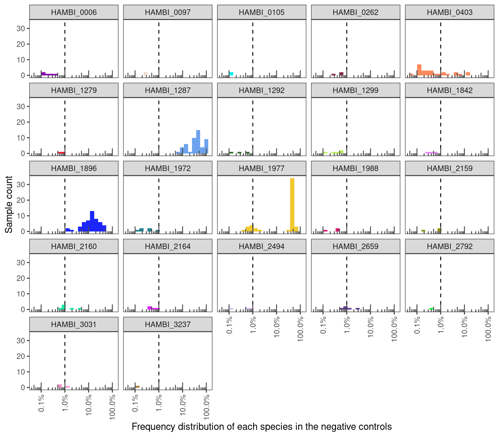
Show/hide code
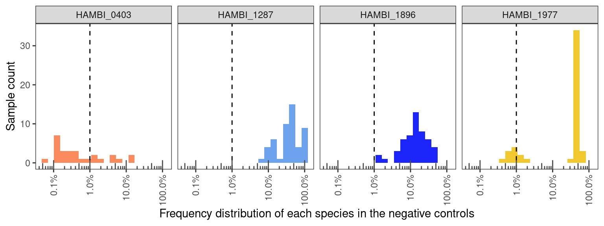
Show/hide code
All negative control have very low OD < 0.1 and it is safe to assume that they are clean.
All negative control have very low OD < 0.1 and low read counts it is safe to assume that they are clean.
Show/hide code
df %>%
left_join(finaltable, by = join_by(sample, community_type, replicate, n_species.x==n_species)) %>%
filter(f_raw > 0) %>%
filter(str_detect(strainID, "0403|1287|1896|1977")) %>%
dplyr::select(sample_tot_raw, sample, OD, community_type) %>%
distinct() %>%
pivot_longer(c(-sample, -community_type)) %>%
ggplot(aes(x = value)) +
geom_histogram(bins = 5) +
facet_grid(~name, scales = "free_x")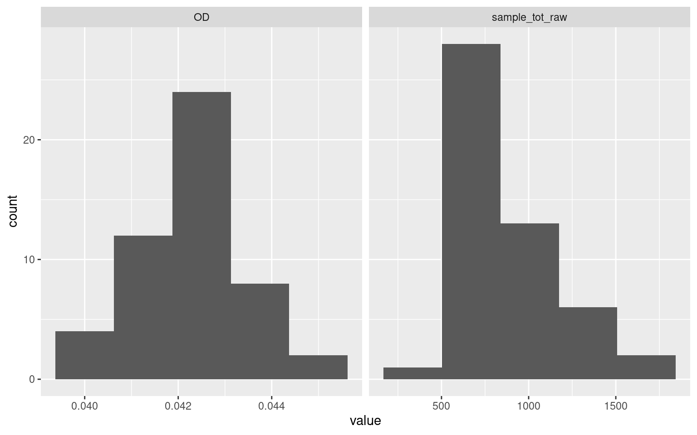
5.2 Positive controls
The positive community controls should each have all 23 species.
Show/hide code
2/3 community controls have plenty of reads and look normal. One has under 1000 reads in total and it only contains the 4 focal species (0403, 1287, 1896, 1977). It looks to me that this could be a mislabeled negative control?
5.3 Misassigned reads
These libraries were only prepared with samples containing HAMBI_0403, HAMBI_1287, HAMBI_1896, and HAMBI_1977 so any time species other than these show up is just an incorrect assignment by Rbec or index leakage/crosstalk from the positive community controls. Let’s check quickly how many of these there are…
Show/hide code
there are only very small number of reads mapping to off-target species per experimental sample probably from crosstalk leakage.
5.4 Samples with few total reads
Some of the experimental pairs had streptomycin concentrations higher than any of the species individually could tolerate. We would expect then that no species would grow successfully in these samples and that the overall biomass would be very low, thus resulting in a low number of recovered reads from these samples.
To look into this. first let’s check which samples have very low OD600 in the endpoint samples. We’ll filter out samples with an OD of less than 0.1 and also samples with fewer than 1000 reads. It is generally good practice to exclude samples with low number of reads.
Show/hide code
Samples with low reads or low OD are all negative controls or the one positive control that failed (plus another positive control 4_p10_A01 but this must be from mislabeling because there were no positive controls actually on the experimental plates).
5.5 Filter to target species
Exclude positive and negative controls and also exclude species that are not in the focal 4
Show/hide code
finaltable_exp_mstr <- finaltable %>%
filter(community_type %nin% c("empty", "neg_control", "pos_control")) %>%
# no low-read samples to filter
#filter(sample %nin% lowread_samps) %>%
filter(strainID %in% c("HAMBI_0403", "HAMBI_1287", "HAMBI_1896", "HAMBI_1977")) %>%
group_by(sample) %>%
mutate(f_raw_targetsp = count_correct/sum(count_correct),
sample_tot_targetsp = sum(count_correct)) %>%
ungroup() %>%
relocate(c(sample_tot_targetsp, f_raw_targetsp), .after = f_raw)5.6 Masterplate samples
5.6.1 Pairs
Something a bit weird is going on with two of the masterplate pairs. Samples P19 and P20 both somehow have ~20 of HAMBI_0403 present in them. However, the rest of the species composition looks like how we expect them. I think we will keep these two masterplate samples and just filter out the HAMBI_0403 that shouldn’t be there
Show/hide code
Show/hide code
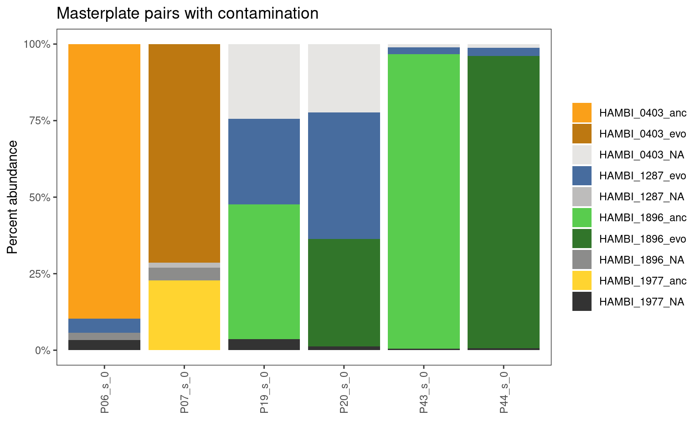
5.6.2 Trios
Trio masterplates look quite good. Yes, there are some samples where a species that shouldn’t be there is > 3%, but these are always < 5% and there are no samples with major contamination
Show/hide code
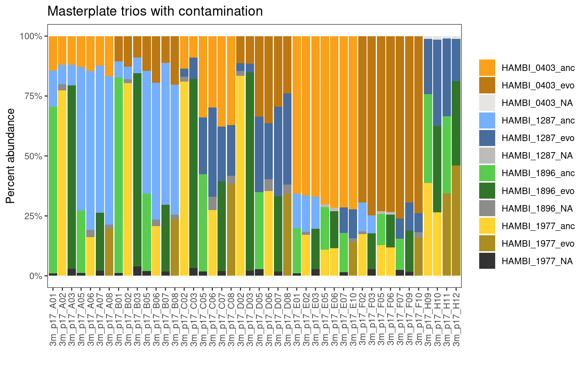
Show/hide code
finaltable_exp_mstr %>%
filter(str_detect(notes, "trios") & str_detect(notes, "masterplate")) %>%
filter(is.na(evo_hist)) %>%
filter(f_raw > 0) %>%
contam_histogram(trans = FALSE, x = f_raw_targetsp) +
labs(x = "Species frequency", y = "Sample count") +
ggtitle("Frequency distribution of misassigned species in masterplate trios")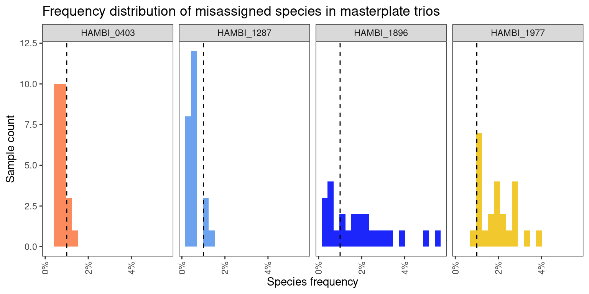
Show/hide code
finaltable_exp_mstr %>%
filter(str_detect(notes, "trios") & str_detect(notes, "masterplate")) %>%
filter(!is.na(evo_hist)) %>%
filter(f_raw > 0) %>%
contam_histogram(trans = FALSE, x = f_raw_targetsp) +
labs(x = "Species frequency", y = "Sample count") +
ggtitle("Frequency distribution of focal species in masterplate trios")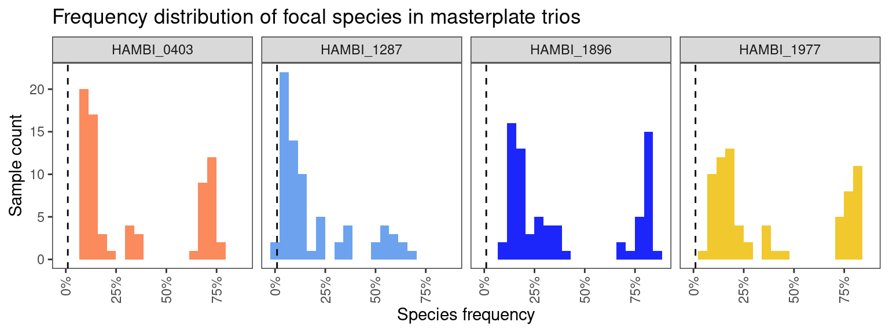
5.6.3 Quartets
One weakness of this contamination-detection approach is that there is no way to tell from this data whether a quartet masterplate is contaminated because every quartet (by definition) is inoculated with all of the 4 species at different frequencies and with different evolutionary histories. See Section 5.7.3 below for more information. However, we can still visualize the composition of those quartets and whether they seem to be close to what we expected to put in.
Show/hide code
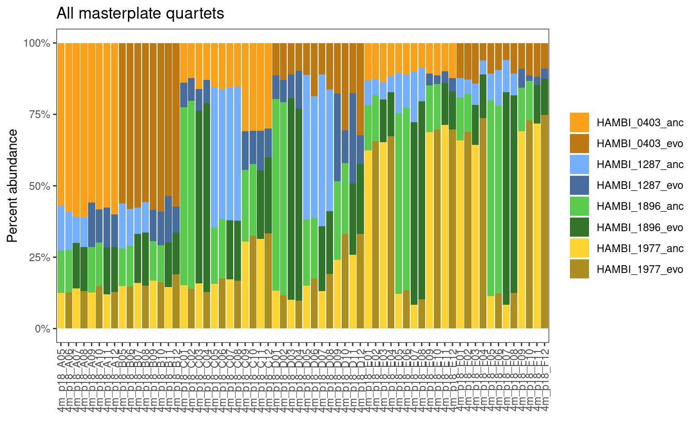
These look really good and are clearly following the correct pattern/distribution for the quartets.
5.7 Experimental samples
We may need to use a higher threshold than 1% (e.g., 3% frequency) because over 3% we can reliably say that a species is present and it is not due to index cross talk.
Show/hide code
finaltable_exp_mstr %>%
filter(str_detect(community_type, "experiment")) %>%
filter(is.na(evo_hist)) %>%
filter(f_raw > 0.03 ) %>%
contam_histogram(trans=TRUE, x = f_raw_targetsp) +
labs(x = "Species frequency", y = "Sample count") +
ggtitle("Frequency distribution of each species exceeding the 3% threshold")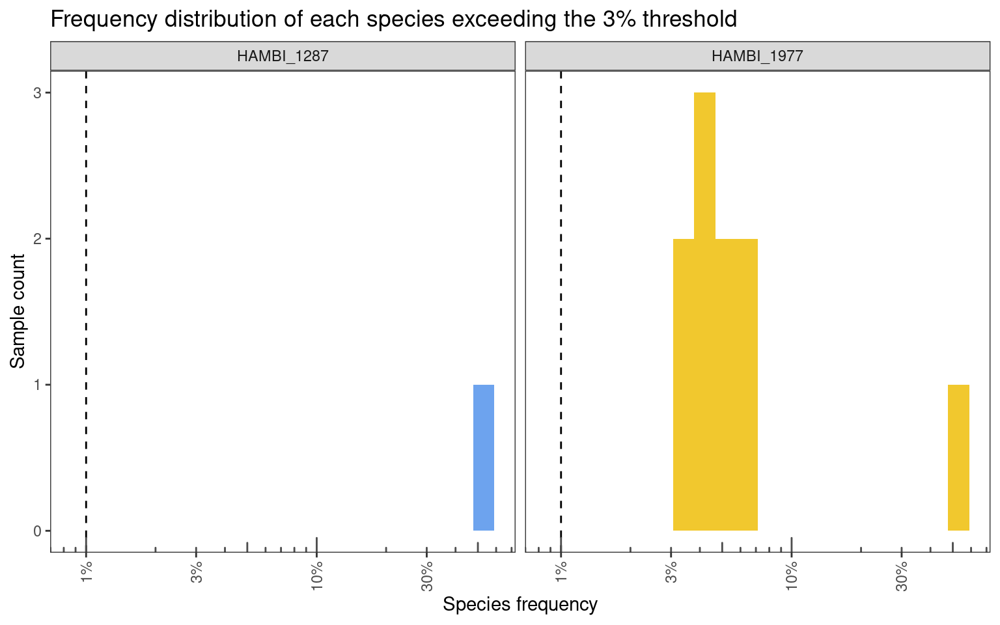
Show/hide code
There are 11 samples (2% of 498 samples) that exceed a 3% crosstalk threshold. 9 samples (2% of 498 samples) have contamination <= 8% and 2 samples (0 % of 498 samples) have > 8% of a species that should not be there. In most cases the species in highly contaminated samples is HAMBI_1977. I think these 2 samples are probably at very high risk for legitimate contamination. It is likely that the rest of the 9 samples with <= 8% contamination are not contaminated but just crosstalk outliers.
5.7.1 Pairs
Here just taking a closer look at the pairs from the experiment that appear to be contaminated.
Show/hide code
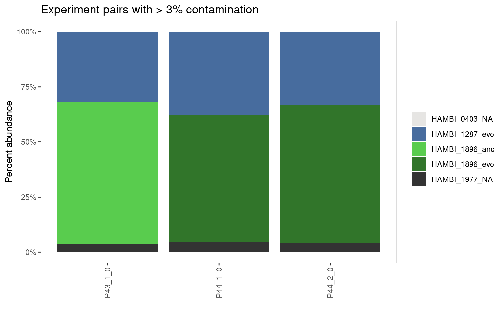
All experimental pair samples look pretty good. I think we should only exclude samples where the contamination is very high (over ~50% of the sample) but those with around 10% or less contaminant I think can be retained. So we will not need filter any of these out.
5.7.2 Trios
Here just taking a closer look at the trios from the experiment that appear to be contaminated.
Show/hide code
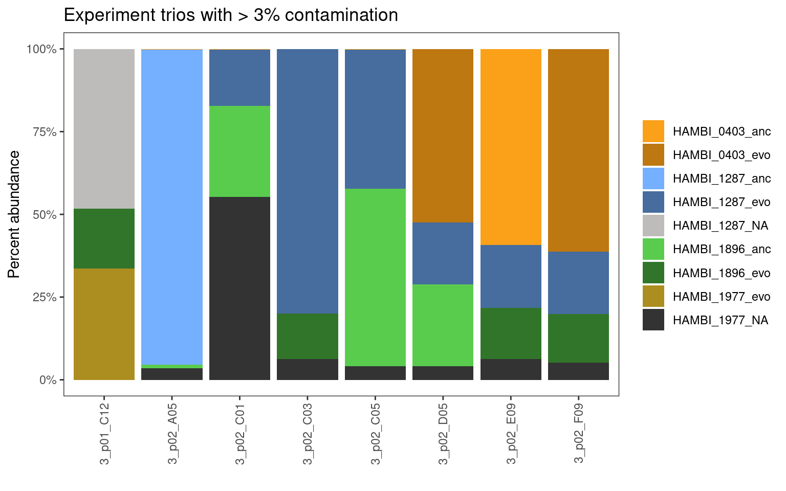
Only 2 trio samples look really bad (over 10 %, more like 50 % contamination). Again, I think we should only exclude samples where the contamination is very high (over ~50% of the sample) but those with around 10% or less contaminant I think can be retained, and I will discard the contaminating sequences.
5.7.3 Quartets
Again, one weakness of this approach is that there is no way to tell from this data whether a quartet is contaminated because every quartet (by definition) is inoculated with all of the 4 species at different frequencies and with different evolutionary histories. Thus we would expect to see either all 4 species present or a subset of the 4 species in the quartet samples, but we cannot tell if these patterns come from contamination or not. Moving forward we just have to assume that the quartets are OK… However, we’ve found so little contamination in our other experimental samples and all samples were handled in the experiment and processed for sequence library preparation in the same way. I think it is safe to assume that contamination in the quartets is minimal issue.
Show/hide code
finaltable_exp_mstr %>%
filter(str_detect(community_type, "experiment")) %>%
filter(n_species == 4) %>%
group_by(sample) %>%
mutate(id = cur_group_id()) %>%
ungroup() %>%
mutate(facet = ntile(id, 4)) %>%
contaminated_barplot(threshold = 0, quartet = TRUE, y=f_raw_targetsp) +
ggtitle("All experimental quartets") +
facet_wrap(~facet, scales="free_x", nrow=4) +
theme(
strip.background = element_blank(),
strip.text.x = element_blank(),
legend.position = "bottom"
)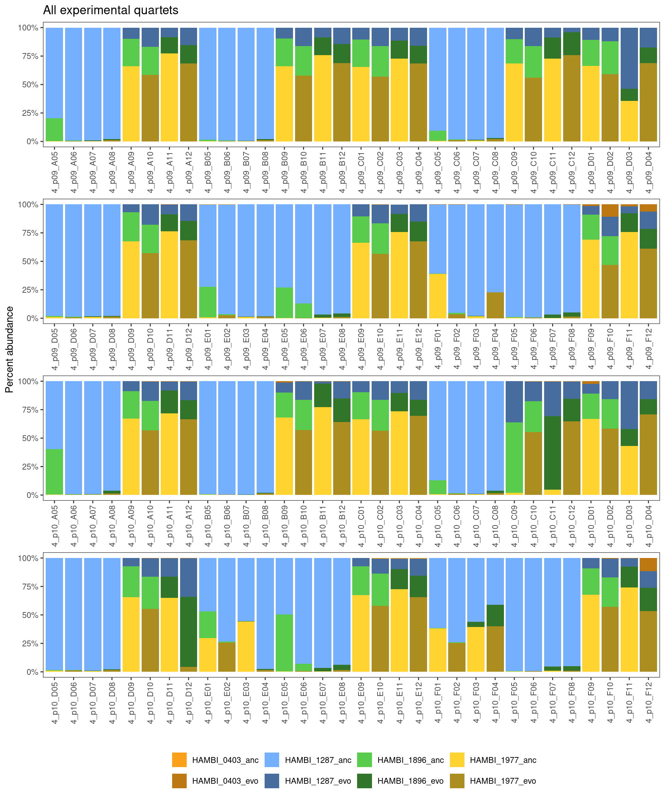
6 Export
Show/hide code
finaltable_exp_mstr_export <- finaltable_exp_mstr %>%
# first remove samples with low read count (< 3000 reads)
# filter(sample %nin% lowread_samps) %>%
# next remove masterplate pair samples that were highly contaminated
# filter(sample %nin% contampairsmaster) %>%
# remove trio samples that were highly contaminated
filter(sample %nin% contamtrios) %>%
# exclude any remaining counts from species that shouldnt be there using again
# the fact that evo_hist should be NA for these species
filter(!is.na(evo_hist)) %>%
# because we set 3% as our limit of detection we set read counts of species
# less than 1% to 0
mutate(count_correct_thresh = if_else(f_raw_targetsp <= 0.03, 0, count_correct)) %>%
# now calculate a new relative abundance based only on the species that should
# be present and that are > 3% relative abundance
group_by(sample) %>%
mutate(f_thresh = count_correct_thresh/sum(count_correct_thresh)) %>%
ungroup() %>%
# for marking which sequencing batch these came from
mutate(batch = "run202410124") %>%
dplyr::select(sample, strainID, evo_hist, count_correct_thresh, f_thresh,
target_f_masterplate = target_f, replicate, strep_conc,
transfers, n_species, community_type, plate_well, batch)6.1 Pairs
Write the pair samples
6.2 Trios
Write the trio samples
6.3 Quartets
Write the quartet samples